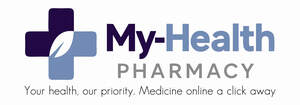

Trade Mark Journal No.2025/043 24 October 2025
UK00004272061 30 September 2025 (35,44)

- Class 35
- Retail sale mail order services connected with the sale of baby foods, medicines, supplements and vitamins, medical devices (medical appliances), animal foods, animal medicines, animal food supplements; retail sale of online services connected with the sale of medicine; retail services connected with the sale of personal protective equipment. Retail services in relation to pharmaceutical preparations; Online ordering services; Online retail services relating to cosmetics; Online retail store services relating to cosmetic and beauty products.
- Class 44
- Health care relating to acupuncture; Health care relating to homeopathy; Health clinic services [medical]; Advisory services relating to health; Home health care services; Consulting services relating to health care; Consultancy relating to health care; Health care relating to fasting; Health care relating to naturopathy; Health screening; Provision of health care services in domestic homes; Collation of information in the healthcare sector; Health centers; Health centres; Health centre services; Health center services; Providing medical information in the healthcare sector; Health clinic services; Medical and healthcare services; Medical and health services relating to DNA, genetics and genetic testing; Providing information in the field of health via a website; Medical and healthcare clinics; Health care; Health-care; Healthcare services; Health-care services; Provision of health care services; Healthcare; Human healthcare services; Cupping therapy services; Pharmacy services; Pharmacy advice; Pharmacy advisory services; Sports medicine services; Providing news and information in the field of medicine; Provision of information relating to medicine; Alternative medicine services; Acupressure therapy; Acupuncture; Acupuncture services; Advice relating to allergies; Advice relating to cosmetics; Advice relating to the medical needs of elderly people; Advice relating to the personal welfare of elderly people [health]; Advisory services relating to beauty treatment; Advisory services relating to degenerative diseases; Advisory services relating to diet; Advisory services relating to health; Advisory services relating to medical problems; Advisory services relating to medical services; Advisory services relating to nutrition; Advisory services relating to pharmaceuticals; Advisory services relating to pharmacies; Advisory services relating to slimming; Advisory services relating to weight control; Advisory services relating to weight loss; Alcohol screening for medical purposes; Alternative medicine services; Ambulant medical care; Anti-smoking therapy; Application of cosmetic products to the body; Application of cosmetic products to the face; Aromatherapy services; Arranging of medical treatment; Assisting individuals to stop smoking; Audiology services; Ayurveda therapy; Beautician services; Beauticians (Services of -); Beauty care; Beauty care for human beings; Beauty consultancy; Beauty consultation; Beauty counselling; Beauty therapy services; Beauty therapy treatments; Beauty treatment; Beauty treatment services; Behavioural analysis for medical purposes; Blood pressure screening services; Bodywork therapy; Cellulite treatment services; Cellulitis treatment services; Charitable services, namely providing medical services; Charitable services, namely, providing medical services to needy persons; Cholesterol testing; Clinic (Medical -) services; Clinic services (Medical -); Clinics; Clinics (Medical -); Collation of information in the healthcare sector; Colonoscopy screening services; Compilation of medical reports; Conducting of medical examinations; Conducting of psychological assessments and examination; Conducting screenings for cardiovascular disease risk factors; Consultancy and information services provided via the Internet relating to pharmaceutical products; Consultancy and information services relating to biopharmaceutical products; Consultancy and information services relating to medical products; Consultancy and information services relating to pharmaceutical products; Consultancy in the field of body and beauty care; Consultancy in the field of nutrition; Consultancy provided via the Internet in the field of body and beauty care; Consultancy relating to cosmetics; Consultancy relating to health care; Consultancy relating to nutrition; Consultancy services in the field of nutrition; Consultancy services related to nutrition; Consultancy services relating to beauty; Consultancy services relating to cosmetics; Consultancy services relating to nutrition; Consultancy services relating to prosthetic implants; Consultancy services relating to slimming; Consultancy services relating to surgery; Consultation services in the field of make-up; Consultation services relating to beauty care; Consultation services relating to skin care; Consulting services relating to health care; Cosmetic analysis; Cosmetic and plastic surgery; Cosmetic and plastic surgery clinic services; Cosmetic body care services; Cosmetic electrolysis; Cosmetic electrolysis for the removal of hair; Cosmetic facial and body treatment services; Cosmetic laser treatment for hair growth; Cosmetic laser treatment of skin; Cosmetic laser treatment of spider veins; Cosmetic laser treatment of tattoos; Cosmetic laser treatment of unwanted hair; Cosmetic laser treatment of varicose veins; Cosmetic make-up services; Cosmetic skin tanning services for human beings; Cosmetic surgery services; Cosmetic treatment; Cosmetic treatment for the body; Cosmetic treatment for the face; Cosmetic treatment for the hair; Cosmetic treatment services for the body, face and hair; Cosmetician services; Cosmetics consultancy services; Counseling relating to occupational therapy; Counselling relating to diet; Counselling relating to nutrition; Counselling relating to the psychological relief of medical ailments; Counselling relating to the psychological treatment of medical ailments; Cryotherapy services; Cupping therapy services; Deep tissue massage; Dermatological services for treating skin conditions; Dermatology services; Diabetes screening services; Dietary advice; Dietary and nutritional guidance; Dietary guidance; Dietetic advisory services; Dietetic counselling services [medical]; Dietician service; Dietitian services; Dispensing of pharmaceuticals; Drug, alcohol and DNA screening for medical purposes; Drug rehabilitation services; Drug screening for medical purposes; Drug testing for substance abuse; Drug testing of participants in sports for the use of illegal or prohibited performance enhancing substances; Drug use screening services; Electro therapy services for physiotherapy; Electrolysis for cosmetic purposes; Exercise facilities for health rehabilitation purposes (Provision of -); Facial beauty treatment services; Facial treatment services; Family planning; Fitness testing; Fitting of artificial limbs; Fitting of artificial limbs, prosthetic devices and prostheses; Fitting of contact lenses; Fitting of eyeglasses; Fitting of hearing aids; Fitting of optical lenses; Fitting of orthopaedic devices; Fitting of orthopedic devices; Fitting of prosthetics; Food nutrition consultation; Foot care; Foot massage services; Genetic counseling; Genetic testing for medical purposes; Guidance on nutrition; Gynecology services; Hair care services; Hair replacement; Hair restoration; Hair restoration services; Health advice and information services; Health care; Health care consultancy services [medical]; Health care in the nature of health maintenance organizations; Health care relating to acupuncture; Health care relating to chiropraxis; Health care relating to fasting; Health care relating to homeopathy; Health care relating to hydrotherapy; Health care relating to naturopathy; Health care relating to osteopathy; Health care relating to relaxation therapy; Health care relating to remedial exercise; Health care relating to therapeutic massage; Health care services offered through a network of health care providers on a contract basis; Health center services; Health centers; Health centre services; Health centres; Health clinic services; Health clinic services [medical]; Health consultancy; Health counseling; Health counselling; Health resort services [medical]; Health risk assessment surveys; Health screening; Health screening services in the field of asthma; Health screening services in the field of sleep apnea; Health spa services; Healthcare; Health-care; Healthcare services; Health-care services; Holistic psychotherapy; Home health care services; Home nursing aid services; Homeopathic clinical services; Hospice services; Hospices; Hospital nursing home services; Hospital services; Hospitals; Hot stone massage; Human fertility treatment services; Human healthcare services; Human hygiene and beauty care; Human sperm donation services; Hydrotherapy; Hygienic and beauty care; Hygienic and beauty care for human beings; Hygienic and beauty care for humans; Hygienic and beauty care services; Hypnotherapy; In vitro fertilisation services; In vitro fertilization services; Individual and group psychology services; Individual medical counseling services provided to patients; Information relating to massage; Information services relating to health care; Information services relating to the veterinary pharmaceutical industry; Injectable filler treatments for cosmetic purposes; Insomnia therapy services; Issuing of medical reports; Laboratory analysis services relating to the treatment of persons; Laser hair removal services; Laser removal of spider veins; Laser removal of tattoos; Laser removal of toenail fungus; Laser removal of varicose veins; Laser skin rejuvenation services; Laser skin tightening services; Laser vision correction services; Laser vision surgery services; Leasing of medical equipment; Liposuction services; Maintaining personal medical history records and files; Managed health care services; Massage; Massage and therapeutic shiatsu massage; Massage services; Massages; Medical advice in the field of pregnancy; Medical advisory services; Medical analysis for the diagnosis and treatment of persons; Medical analysis services; Medical analysis services for cancer diagnosis and prognosis; Medical analysis services for the diagnosis of cancer; Medical analysis services relating to the treatment of patients; Medical analysis services relating to the treatment of persons; Medical analysis services relating to the treatment of persons provided by a medical laboratory; Medical and health services relating to DNA, genetics and genetic testing; Medical and healthcare clinics; Medical and healthcare services; Medical assistance; Medical assistance consultancy provided by doctors and other specialized medical personnel; Medical assistance services; Medical care; Medical care and analysis services relating to patient treatment; Medical care services; Medical clinic day care services for sick children; Medical clinic services; Medical clinics; Medical consultancy for selecting appropriate wheelchairs, commodes, invalid hoists, walking frames and beds; Medical consultancy relating to hearing loss; Medical consultation; Medical consultations; Medical counseling; Medical counseling relating to stress; Medical counseling services; Medical counselling; Medical counselling services; Medical diagnostic services; Medical equipment rental; Medical evaluation services; Medical examination of individuals; Medical examination of individuals (Provision of reports relating to the -); Medical examinations; Medical health assessment services; Medical imaging services; Medical information; Medical information (Provision of -); Medical information services; Medical information services provided via the Internet; Medical laboratory services for the analysis of blood samples taken from patients; Medical laboratory services for the analysis of samples taken from patients; Medical nursing; Medical nursing services; Medical screening; Medical screening relating to the heart; Medical screening services in the field of asthma; Medical screening services in the field of sleep apnea; Medical screening services relating to cardiovascular disease; Medical services; Medical services for the diagnosis of conditions of the human body; Medical services for the treatment of conditions of the human body; Medical services for the treatment of skin cancer; Medical services for treatment of the skin; Medical services in the field of diabetes; Medical services in the field of in vitro fertilization; Medical services in the field of nephrology; Medical services in the field of oncology; Medical services in the field of treatment of chronic pain; Medical services relating to the removal, treatment and processing of bone marrow; Medical services relating to the removal, treatment and processing of human blood; Medical services relating to the removal, treatment and processing of human cells; Medical services relating to the removal, treatment and processing of stem cells; Medical services relating to the removal, treatment and processing of umbilical cord blood; Medical spa services; Medical testing; Medical testing services, namely, fitness evaluation; Medical testing services relating to the diagnosis and treatment of disease; Medical treatment services; Medical treatment services provided by a health spa; Medical treatment services provided by clinics and hospitals; Meditation services; Mental health screening services; Mental health services; Microdermabrasion services; Micropigmentation services; Monitoring of patients; Narcotic rehabilitation; Nursing care; Nursing care (Provision of -); Nursing care services; Nursing home services; Nursing homes; Nursing, medical; Nursing services; Nursing services (Medical -); Nutrition and dietetic consultancy; Nutrition consultancy; Nutrition counseling; Nutrition counselling; Nutritional advice; Nutritional advisory and consultation services; Nutritional advisory services; Nutritional guidance; Optometry; Optometry services; Osteoporosis screening; Outpatient and inpatient care services; Palliative care; Paramedical services; Pathology services; Pathology services relating to the treatment of persons; Pediatric nursing services; Pedicurist services; Performing diagnosis of diseases; Permanent hair removal and reduction services; Permanent makeup services; Personal hair removal services; Personal therapeutic services relating to cellulite removal; Personal therapeutic services relating to circulatory improvement; Personal therapeutic services relating to fat dissolution; Personal therapeutic services relating to hair regrowth; Personality assessment services [mental health services]; Personality testing for psychological purposes; Personality testing [mental health services]; Pharmaceutical advice; Pharmaceutical advisory services; Pharmaceutical consultation; Pharmaceutical services; Pharmacists' services to make up prescriptions; Pharmacy advice; Pharmacy advisory services; Pharmacy services; Phlebotomy services; Physical examination; Physical examination services; Physical rehabilitation; Physical therapy; Physical therapy services; Physician services; Physicians' services; Physiotherapy; Physiotherapy [physical therapy]; Plastic surgery; Plastic surgery services; Podiatrist; Pre-employment drug screening; Pregnancy testing; Preparation and dispensing of medications; Preparation of prescriptions by pharmacists; Preparation of prescriptions in pharmacies; Preparation of psychological profiles for medical purposes; Preparation of psychological reports; Preparation of reports relating to health care matters; Preparation of reports relating to medical matters; Preparing psychological profiles; Private hospital services; Professional consultancy relating to agriculture; Professional consultancy relating to diet; Professional consultancy relating to health; Professional consultancy relating to health care; Professional consultancy relating to nutrition; Providing health care information by telephone; Providing health information; Providing information about beauty; Providing information about dietary supplements and nutrition; Providing information in the field of health via a website; Providing information relating to acupuncture; Providing information relating to beauty salon services; Providing information relating to dentistry; Providing information relating to dietary and nutritional guidance; Providing information relating to dietary and nutritional supplements; Providing information relating to medical services; Providing information relating to nursing care services; Providing information relating to physical examinations; Providing information relating to the preparation and dispensing of medications; Providing information relating to the rental of medical machines and apparatus; Providing information to patients in the field of administering medications; Providing information via the Internet in the field of diabetes; Providing laser therapy for treating medical conditions; Providing long-term care facilities; Providing medical advice in the field of dermatology; Providing medical advice in the field of weight loss; Providing medical information; Providing medical information from a web site; Providing medical information in the field of dermatology; Providing medical information in the field of geriatrics; Providing medical information in the field of weight loss; Providing medical information in the healthcare sector; Providing medical support in the monitoring of patients receiving medical treatments; Providing mental rehabilitation facilities; Providing news and information in the field of medicine; Providing nutritional information about drinks for medical weight loss purposes; Providing nutritional information about food; Providing nutritional information about food for medical weight loss purposes; Providing on-line information relating to oncology; Providing on-line information relating to the prevention of cardiovascular disease and strokes; Providing online medical record services other than dentistry; Providing physical rehabilitation facilities; Providing psychological treatment; Providing smoking cessation treatment services; Providing weight loss program services; Provision of dietetic advice; Provision of health care services; Provision of health care services in domestic homes; Provision of information relating to behavioural modification; Provision of information relating to medicine; Provision of information relating to psychology; Provision of medical assistance; Provision of medical facilities; Provision of medical facilities at sporting events; Provision of medical information; Provision of medical information relating to poisons; Provision of medical services; Provision of medical treatment; Provision of nursing care; Provision of pharmaceutical information; Provision of public conveniences; Provision of sauna facilities; Provision of solarium [sun tanning] facilities; Provision of washroom facilities; Psychiatric consultation; Psychiatric services; Psychiatric testing; Psychiatry; Psychological assessment and examination services; Psychological assessment services; Psychological care; Psychological consultation; Psychological counseling; Psychological counseling of staff; Psychological counseling services in the field of sports; Psychological counselling; Psychological diagnosis services; Psychological examination; Psychological profiles for medical purposes (Preparation of -); Psychological testing; Psychological testing for medical purposes; Psychological testing services; Psychological tests; Psychological therapy for infants; Psychological treatment; Psychologist (Services of a -); Psychometric testing for medical purposes; Psychotherapists' services; Psychotherapy; Psychotherapy services; Public health counseling; Reflexology; Reflexology services; Rehabilitation for substance abuse patients; Rehabilitation (Narcotic -); Rehabilitation of alcohol addicted patients; Rehabilitation of drug addicted patients; Rehabilitation of narcotic addicted patients; Rehabilitation of substance abuse patients; Rehabilitation services for substance abuse patients; Reiki services; Removal of body cellulite; Rental of apparatus and installations in the field of medical technology; Rental of equipment for medical purposes; Rental of hospital equipment; Rental of medical and health care equipment; Rental of medical apparatus; Rental of medical equipment; Rental of medical machines and apparatus; Rental of medical x-ray apparatus; Rental of ultrasonic diagnostic apparatus; Residential medical advice services; Residential medical treatment services; Respite care services in the nature of home nursing aid; Respite care services in the nature of nursing aid services; Rest home services; Rest homes; Salon services (Beauty -); Salon services (Hairdressing -); Salons (Beauty -); Salons (Hairdressing -); Sauna facilities (Provision of -); Sedation dentistry; Services for the care of the face; Services for the care of the feet; Services for the care of the hair; Services for the care of the scalp; Services for the care of the skin; Services for the planning of weight reduction programmes; Services for the preparation of medical reports; Services for the provision of medical care information; Services for the provision of medical facilities; Services for the testing of blood; Services for the testing of urine; Services of a hair and beauty salon; Services of a make-up artist; Services of a psychologist; Services rendered by a dietician; Skin care salon services; Skin care salons; Skin tanning service for humans for cosmetic purposes; Slimming salon services; Slimming treatment services; Smoking (Anti -) therapy; Spas; Speech and hearing therapy; Speech therapy; Sports massage; Sports medicine services; Stem cell storage; Stress management services; Supervision of weight reduction programmes; Surgery; Surgery (Cosmetic -); Surgery (Plastic -); Surgical treatment services; Teeth whitening services; Telemedicine services; Testicular cancer screening services; Thai massage; Therapeutic treatment of the body; Therapeutic treatment of the face; Therapy services; Traditional Japanese massage; Treatment of allergies; Treatment to joint-dislocation, sprain, bone-fracture or the like (judo-seifuku); Trichology services; Turkish bath services; Turkish baths; Vaccination services; Vascular screening; Vision screening services; Voice and speech therapy services; Weight control evaluation; Weight control treatment; Weight reduction diet planning and supervision; Weight reduction services; Weight-reduction programmes (Planning of -); Weight-reduction programmes (Supervision of -); Withdrawal treatment services for addicts; Withdrawal treatments for addicts; X-ray examinations for medical purposes; X-ray services; X-ray technician services.Advisory services relating to medical services; Drug testing for substance abuse; Health care consultancy services [medical]; Health screening; Issuing of medical reports; Medical consultation; Medical consultations; Medical examinations; Medical examination of individuals (provision of reports relating to the-); Medical health assessment services; Driver medical services for individuals including HGV medical services for drivers, PCV medical services for drivers and lorry and bus medical services for drivers; Driver medical services for businesses; Pre-employment medical services; Medical information retrieval services; Medical information services; Medical screening; Medical services; Medical services for the diagnosis of conditions of the human body; Medical testing; Medical testing services, namely, fitness evaluation; Physician services; Physicians' services including attending sites to conduct driver medical services; Preparation of reports relating to health care matters; Preparation of reports relating to medical matters; Medical and healthcare clinics; Medical clinics; Clinics (Medical -); Clinic services (Medical -); Clinic (Medical -) services; Medical clinic services; Medical clinic day care services for sick children; Health clinic services [medical]; Medical counselling; Mobile medical clinic services; Medication counseling; Medical assistance consultancy provided by doctors and other specialized medical personnel; Remote monitoring of medical data including for medical diagnosis and treatment; Health clinic services; Medical house call services; Professional consultancy relating to health care. Medical consultation; Medical and healthcare clinics; Medical clinics; Clinics (Medical -); Clinic services (Medical -); Clinic (Medical -) services; Medical clinic services; Medical clinic day care services for sick children; Medical consultations; Health clinic services [medical]; Medical counselling; Medical examinations; Mobile medical clinic services; Medication counseling; Medical assistance consultancy provided by doctors and other specialized medical personnel; Remote monitoring of medical data for medical diagnosis and treatment; Medical examination of individuals; Medical screening; Health clinic services; Medical house call services.Pharmacy advice; Pharmacy advisory services; Preparation of prescriptions in pharmacies; Medical assistance consultancy provided by doctors and other specialized medical personnel; Pharmacy services.
naureen akhtar
abbas ali